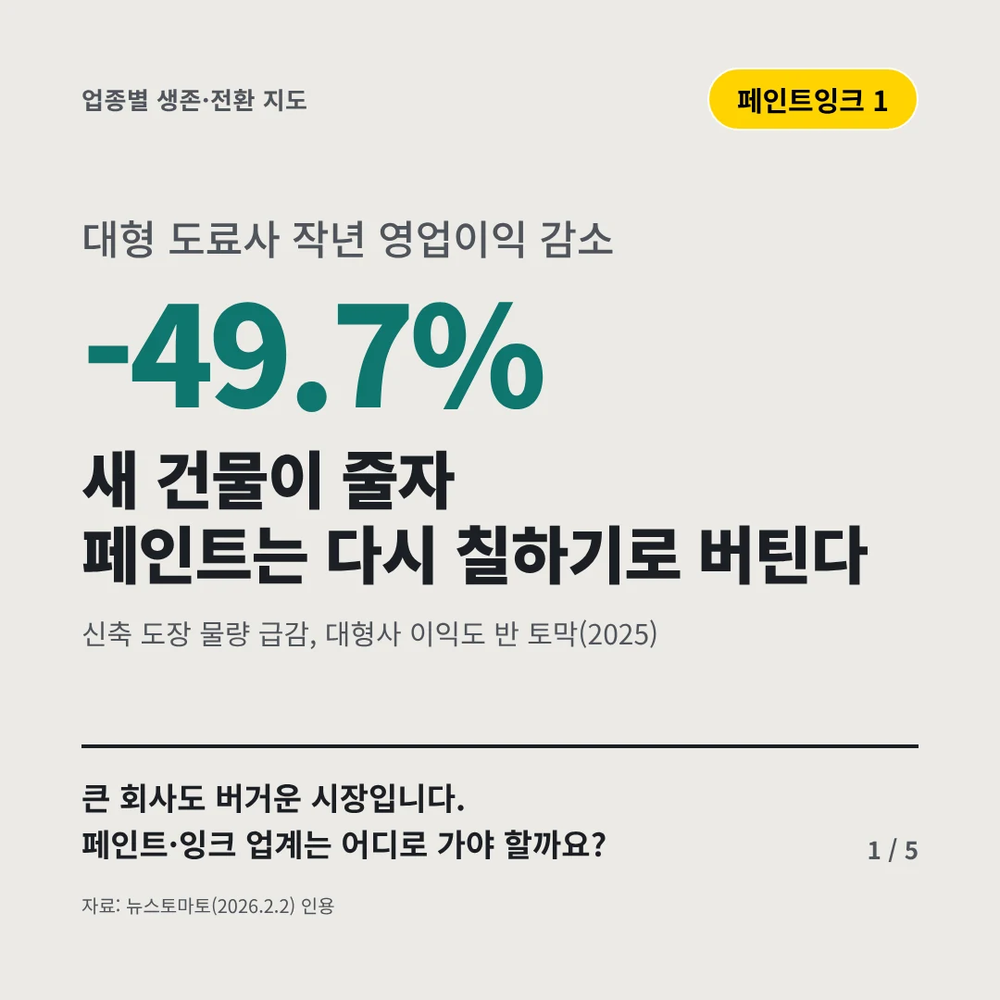
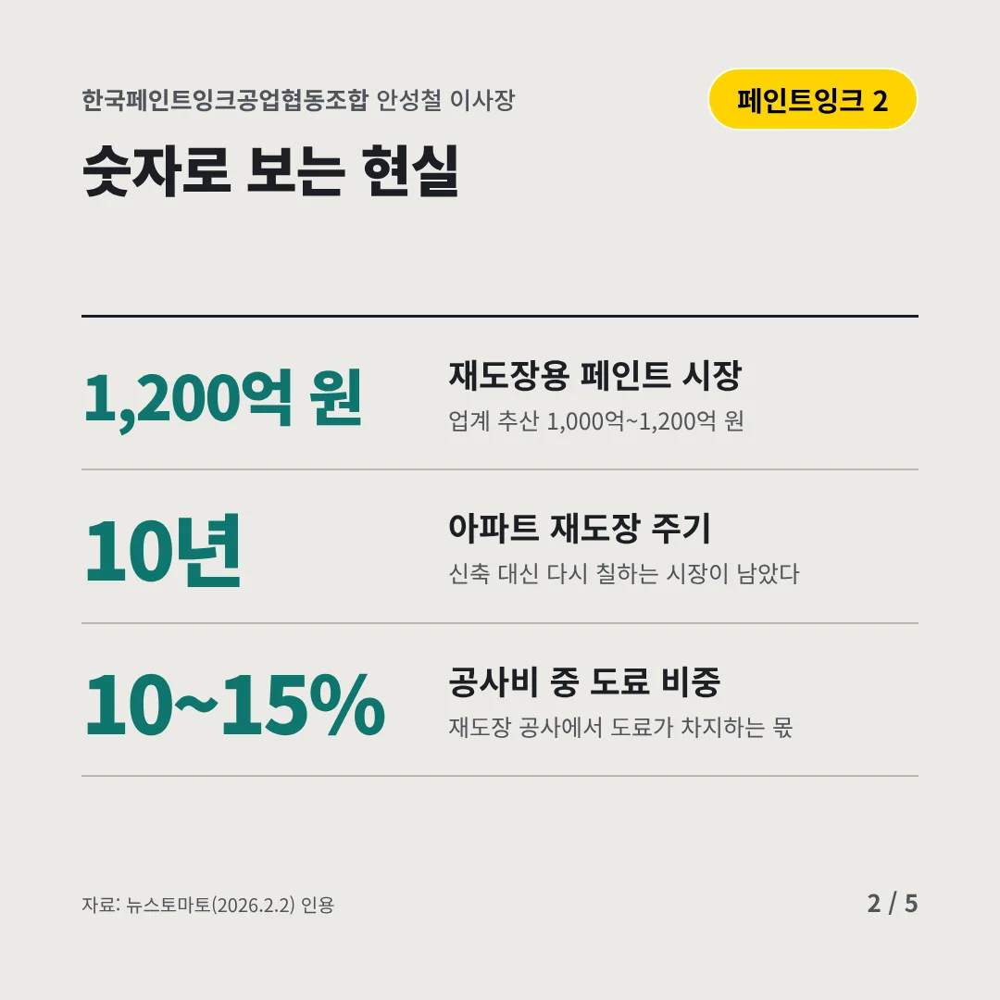
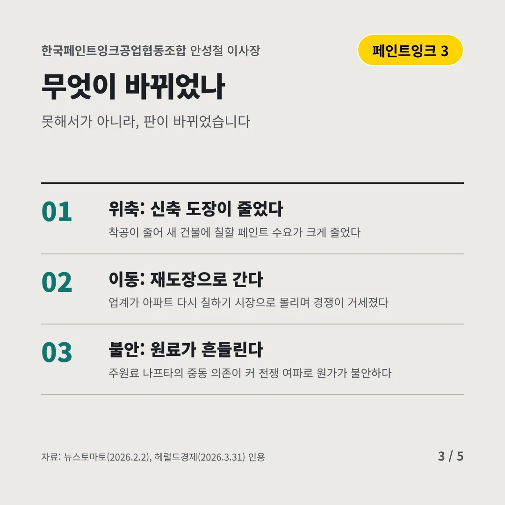
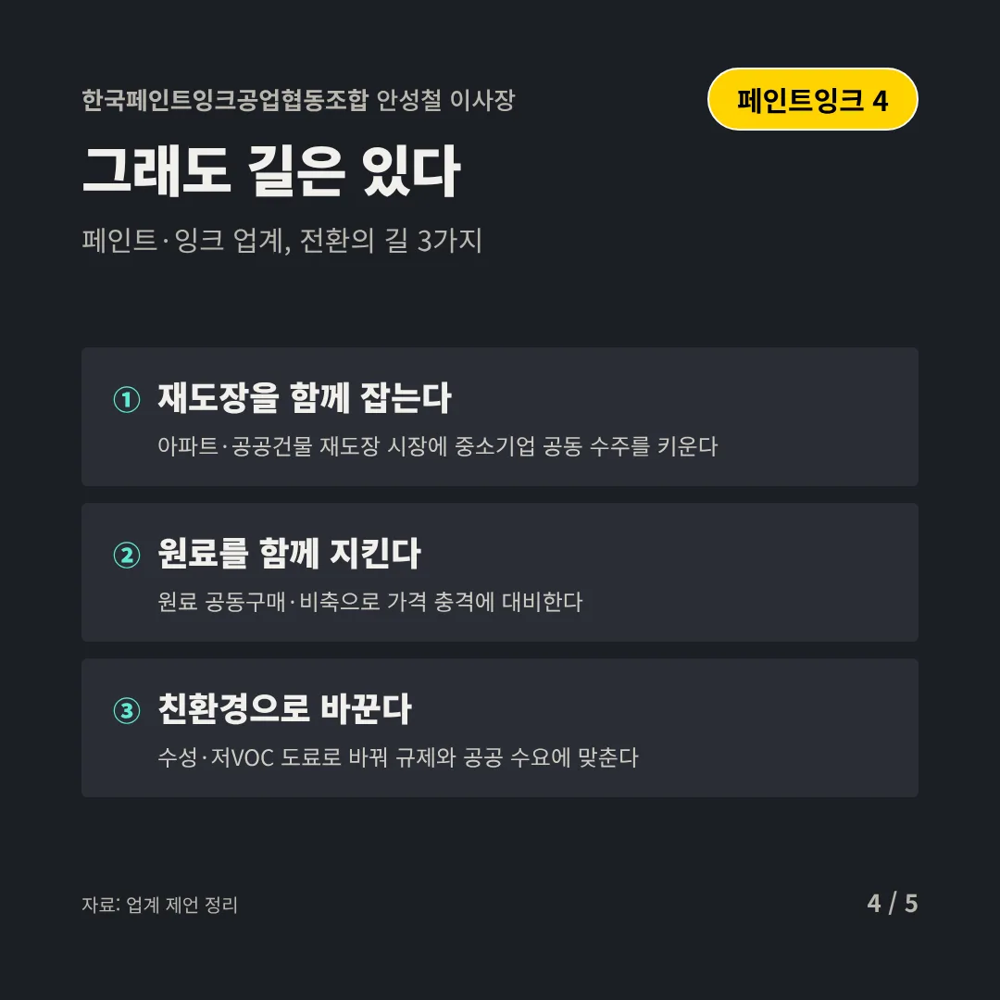
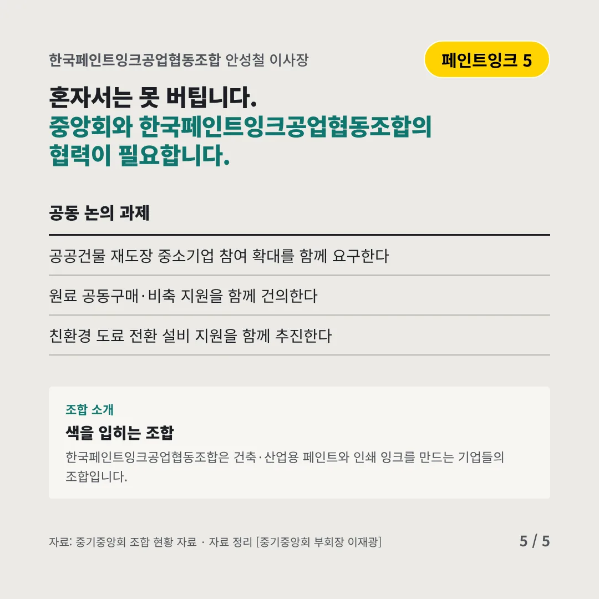
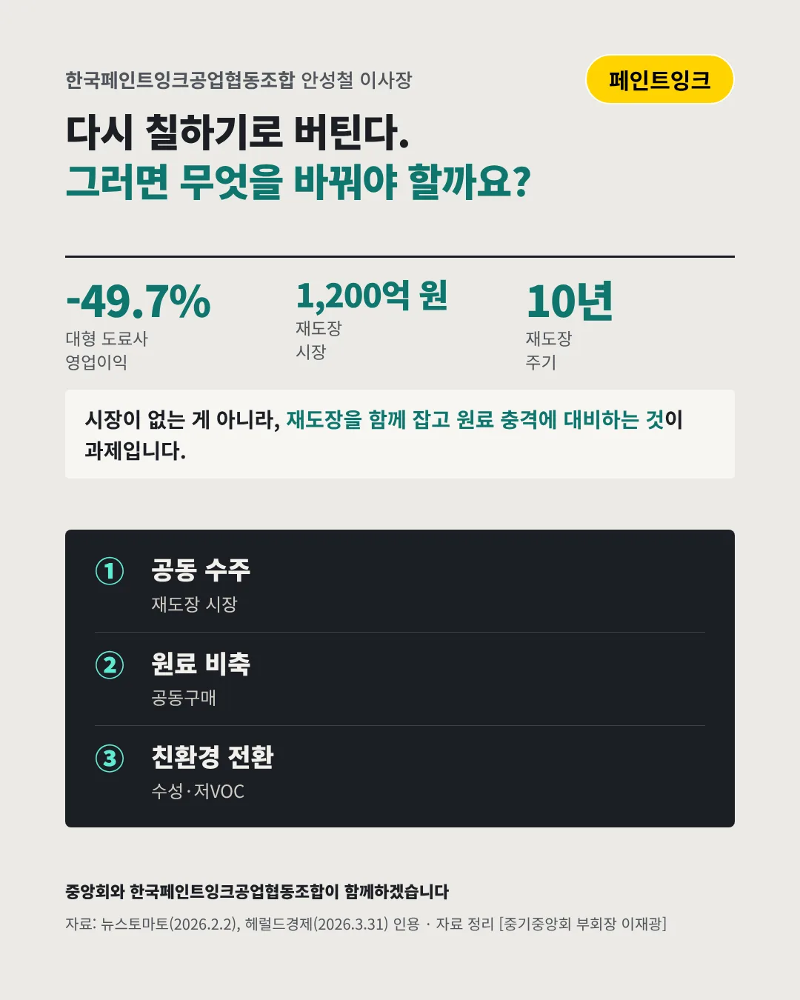

한국페인트잉크공업협동조합
새 건물이 줄자 페인트는 다시 칠하기로 버틴다
-49.7% 대형 도료사 작년 영업이익 감소






큰 회사도 버거운 시장입니다. 페인트·잉크 업계는 어디로 가야 할까요?
숫자로 보는 현실
- 1,200억 원재도장용 페인트 시장업계 추산 1,000억~1,200억 원
- 10년아파트 재도장 주기신축 대신 다시 칠하는 시장이 남았다
- 10~15%공사비 중 도료 비중재도장 공사에서 도료가 차지하는 몫
무엇이 바뀌었나
- 위축: 신축 도장이 줄었다착공이 줄어 새 건물에 칠할 페인트 수요가 크게 줄었다
- 이동: 재도장으로 간다업계가 아파트 다시 칠하기 시장으로 몰리며 경쟁이 거세졌다
- 불안: 원료가 흔들린다주원료 나프타의 중동 의존이 커 전쟁 여파로 원가가 불안하다
그래도 길은 있다
- 재도장을 함께 잡는다아파트·공공건물 재도장 시장에 중소기업 공동 수주를 키운다
- 원료를 함께 지킨다원료 공동구매·비축으로 가격 충격에 대비한다
- 친환경으로 바꾼다수성·저VOC 도료로 바꿔 규제와 공공 수요에 맞춘다
한 장 요약

조합 소개
한국페인트잉크공업협동조합은 건축·산업용 페인트와 인쇄 잉크를 만드는 기업들의 조합입니다.
자료: 뉴스토마토(2026.2.2), 헤럴드경제(2026.3.31)